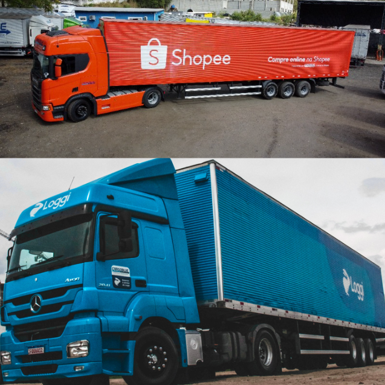
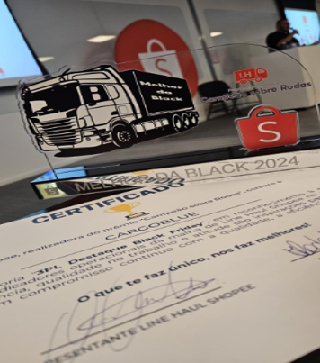

Soluções logísticas inteligentes, personalizadas e de alta performance para conectar o Brasil com eficiência e confiança.
A Cargoblue nasceu com um propósito claro: oferecer soluções de logística e transporte personalizadas, inteligentes e de alta qualidade. Nossa atuação é focada em otimizar recursos, elevar a performance das operações e transformar processos em estruturas robustas, seguras e orientadas por resultados.
Contamos com uma equipe motivada e comprometida, apoiada pela sólida experiência do nosso fundador — profissional com trajetória em grandes empresas nacionais e multinacionais. Essa bagagem nos permite entregar soluções flexíveis, inovadoras e sob medida para cada cliente.
A CARGOBLUE nasce com o propósito de revolucionar a logística com agilidade e tecnologia.
Fechando novas parcerias estratégicas.
Conquistamos clientes importantes para nosso crescimento.
A Shoppe elegeu a Cargoblue a melhor empresa de logistica da Black Friday.
Implementação de monitoramento 24h e sistemas inteligentes de gestão de cargas.
Ser Cargoblue é fazer parte de uma equipe que acredita em parceria, evolução e responsabilidade. Aqui, cada profissional tem voz, recebe apoio para crescer e contribui diretamente para entregar soluções logísticas seguras e eficientes. Valorizamos pessoas que vestem a camisa, cuidam do que fazem e ajudam a construir um ambiente onde o resultado aparece porque o time trabalha junto.
Acreditamos que cuidar das pessoas ao nosso redor faz parte do nosso propósito. Por isso, apoiamos iniciativas que promovem acolhimento, solidariedade e oportunidades para quem mais precisa. Cada ação reflete o compromisso da Cargoblue em construir um impacto real, reforçando a importância da empatia e da responsabilidade com a comunidade.
Nossa estrutura foi desenvolvida para garantir operações ágeis, seguras e eficientes. Contamos com equipamentos modernos, equipes especializadas e processos bem definidos, que sustentam cada etapa do trabalho. Tudo é pensado para oferecer confiabilidade, organização e suporte completo aos nossos clientes, mantendo um padrão elevado de qualidade em cada entrega.
Na Cargoblue, o cliente vem sempre em primeiro lugar. Tudo começa ouvindo, entendendo a realidade e os desafios de quem confia suas operações a nós.
Usamos tecnologia e inteligência logística para gerar segurança, previsibilidade e tranquilidade, garantindo que cada entrega aconteça do jeito certo.
Acreditamos em parcerias próximas e transparentes. Estamos ao lado do cliente, ajustando soluções e evoluindo juntos, com responsabilidade e confiança.
Esse é o nosso DNA do Cliente: escutar, adaptar e entregar valor de forma humana e eficiente.
"Compromisso com segurança, rastreabilidade e conformidade regulatória."
A CargoBlue é certificada para o transporte de produtos para a saúde, atendendo rigorosamente às exigências da Anvisa.
Certificações Ativas:
• INSUMOS FARMACÊUTICOS / MEDICAMENTOS
• 701 - AFE - Concessão – Medicamentos e Insumos Farmacêuticos
• Processo: 25351.356603/2024-90
• Expediente: 0823609/24-3
• Publicações: DOU nº 3.008 – 20/08/2024 | DOU nº 161 – 21/08/2024
"Compromisso com boas práticas ambientais, sociais e governamentais."
Somos habilitados EcoVadis, certificação norte americano. A EcoVadis realiza a avaliação utilizando critérios que se baseiam em padrões internacionais de Responsabilidade Social Empresarial, como os Princípios do Pacto Global, as convenções da Organização Internacional do Trabalho (OIT), a norma da Iniciativa de Relatório Global (GRI), o padrão ISO 26000, além dos princípios CERES.
Este selo é a comprovação de que estamos no caminho certo, buscando tornar a cadeia produtiva mais resiliente, trazer mais diversidade de ponta a ponta e engajar os nossos colaboradores em temas ambientais e sociais importantes.